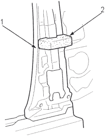
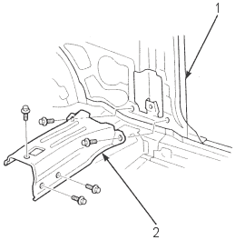
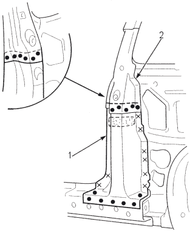

- Glue the insulator to the centre inner pillar as shown.
Insulator: P/N. 774416-SF1-000
Adhesive: Cemedine 366, or equivalent.

- CENTRE INNER PILLAR
- INSULATOR
- Set the new centre pillar stiffener lower into position and install the middle floor gusset.

- NEW CENTRE PILLAR STIFFENER LOWER
- MIDDLE FLOOR GUSSET
- Set the new repair part (outer panel) and rear pillar gutter lower into position and clamp them.
Check the body dimensions (see section 4).
- Remove the repair part (outer panel) and weld the centre pillar stiffener lower.

- NEW CENTRE PILLAR STIFFENER LOWER
- CENTRE PILLAR STIFFENER UPPER
- Tack weld the outer panel and rear pillar gutter lower.
- Temporarily install the door, tailgate and rear bumper and check for differences in level and clearance.
Make sure the body lines flow smoothly.